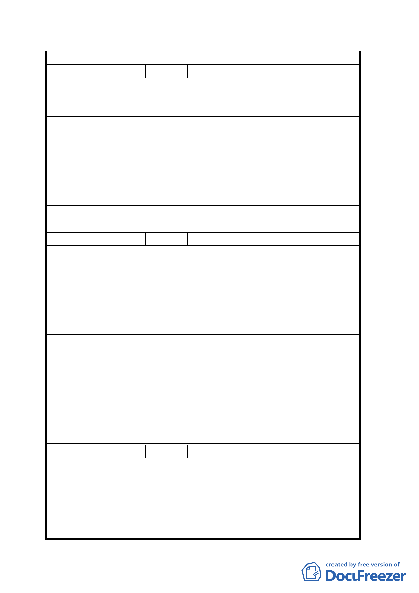

議
編 號 ６ 陳情人 吳富德
1. 動物園假日停車品質不良。
陳 情 理 由 2. 如何串聯動物園及環保公園。
3. 回饋本區過去的公害區過多。
1. 動物園應立即規劃停車場。
2. 動物園出口〈東方〉建橋樑。
建 議 辦 法 3. 動物園出口〈東方〉建纜車站。
4. 北二高台北連絡道和木柵路五段之間為開發之山坡地
列為休憩區。
專案小組
結論
建議事項均留供市府參考。
委員會決
議
依專案小組審查結論辦理。
編 號 ７ 陳情人 黃世集
建議位置：文山區富德段二小段２９２．３００．３０５．
陳情理由
３０６地號。
建議理由：木柵路五段被劃為保護區後闢為垃圾掩埋場及
焚化爐等重大犧牲，請考慮地方回饋。
1. 請擴大象頭地區的住宅區範圍。
建 議 辦 法 2. 木柵路五段外側景美溪行水區請規劃為河濱公園闢建
為休閒遊憩處所。
93.11.11 專案小組會議結論：
原則同意發展局所提方案，惟請對周邊土地坡度 30%以
專 案 小 組 下部分再予檢視，必要時予以納入，微調計畫範圍。
結 論 94.4.14 專案小組會議結論：
1. 住宅區範圍同意發展局所提方案。
2. 留供市府參考
委員會決
議
同意依專案小組 94.4.14 審查結論辦理。
編 號 ８ 陳情人 高立典
陳情理由
建議位置：博嘉段博嘉小段。
建議理由：土地放領部分問題。
建 議 辦 法 依三七五減租或耕者１／３保留權利。
專案小組
結論
土地放領問題建請向地政機關申辦。
委員會決 依專案小組審查結論辦理。
八